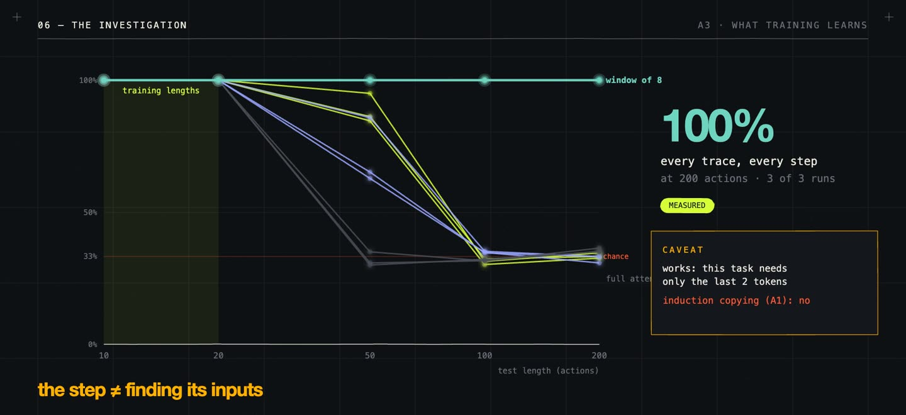

/ 5 VIDEOS · 55 MIN · 6 MIN READ
Understanding Transformers:
what they compute, and what they need.
The transformer was introduced in 2017 in Attention Is All You Need as an architecture for translation. It became the basis of nearly every large language model, and the question grew with its uses: what kind of computation is this architecture actually learning?
Interpretability and theory approach that question from opposite directions. Anthropic's induction heads (2022) exposed a circuit in trained models that finds an earlier occurrence of a token and copies what followed. RASP (2021) described programs in operations a transformer can perform, while Delétang et al. (2022) tested trained networks on formal languages of increasing difficulty. One line asks what a model did learn; the other helps establish what it could learn.
Those are different questions, and deployment adds another layer. A proof that some weights implement a computation is an existence result. Training must find those weights from finite examples. An agent then has to use them inside a system that decides what information to supply and where to keep the state. A failure at any one of these levels can look like a model that “cannot reason”.
This five-part series separates four claims hidden inside “can a transformer do X?”: whether the weights exist (expressivity), whether training finds them (learnability), whether they keep working beyond the training lengths (generalization), and what computation produces the result (mechanism). I use models small enough to train and inspect on a laptop, so that an apparent success can be taken apart.
One machine, two ways to compute
From the second film onward, most experiments use a machine with three states and three actions. The task is to report its final state. Order matters, so counting actions is insufficient. A sequential solution updates the state after each action:
\[s_t = \delta(s_{t-1}, x_t).\]
That takes \(T\) dependent steps. A parallel solution treats each action as a table mapping states to states and composes the tables in a balanced tree, taking \(\log_2 T\) rounds. The computation need not use one neural-network layer per action, but the parallel construction does not by itself establish that a fixed-depth model handles every length.
The recurring experimental result was that a model could learn the local operation and still fail when the computation became longer. In several cases, the failure was in finding the operation's inputs or retaining its state. Changing the system around the model fixed failures that more training would otherwise have been asked to solve.
What did training find?
The first film begins with the clearest mechanism: induction. A two-layer model learned to continue a repeated sequence of random tokens. With a fixed repeat length, it found a shortcut: one head looked 19 positions back. Varying the repeat length removed that opportunity, and the model learned the induction circuit instead, locating the earlier copy and reading what followed it. Accuracy reached 99.7%, then fell to 2% when the circuit was switched off. The intervention tells us what the model used; the original score did not distinguish the two solutions.
The second film asks whether training finds an efficient state-tracking computation. Liu et al. show that finite-state computations admit transformer constructions with depth growing logarithmically in sequence length, and constant-depth constructions for some automata. That is a claim about available solutions. My trained models succeeded at length 8 and fell to chance from length 32. Counting, by comparison, remained accurate at ten times the training length, consistent with the length-general counting computations studied in C-RASP.
The third film investigates what the failing models did learn. I supplied written intermediate states in four chain-of-thought formats. Placing each state immediately after its action worked best, but failures still appeared around step 55, regardless of total input length. I tested three possible explanations. Restricting attention to the last eight tokens made every trace correct at ten times the training length.

The model had learned the operation. It was losing track of which tokens to read. The written computation became reliable when each step's inputs stayed local.
Keep the weights, change the system
In the fourth film, I held the model fixed and changed what surrounded it. Sampling 64 answers helps when some are correct and a selector can identify them. It cannot rescue a set of 64 wrong answers. External memory had a much larger effect: a harness that held the state exactly and supplied only 3–5 tokens per call took the same weights from chance to 100% over 1,000 steps. Splitting work between workers helped only when the summaries they returned could be composed.
This changes how we should interpret the failure. The weights contained something useful, but the original arrangement could not repeatedly use it at the required length. The harness supplied reliable state and selected the relevant inputs. We had improved the computation without improving the model.
The fifth film pushes that division of labor further. Transformers are often described as Turing-complete, but for a trained system the practical question is where the difficult computation lives. A tiny learned controller had only 18 possible local inputs, so I could check them all. Repeating its checked operation added one to 1,000-digit binary numbers without error. A transformer trained end to end on the same task collapsed beyond 16 digits. The system's reliability came from reducing the learned operation to something small enough to verify exhaustively.
The connection to agents
Anyone building agents will recognize this arrangement. At each call, a harness supplies relevant files, a tool result, or a summary of earlier work, and keeps the rest in files, memory, or version control. ReAct (2022) developed an influential reasoning-and-action loop; MemGPT explored external memory, and Lilian Weng's overview discusses harnesses that are themselves optimized. The films give a small, inspectable example of why managing context and state can matter so much.
Learning the operation remains a separate problem. On finite data, a fixed offset or another shortcut can fit the examples as well as the intended procedure. Zhou et al. conjecture that length generalization is favored when the task has a short RASP program that works at every length. Counting fits that description naturally; the state-tracking solutions found here did not generalize in the same way. An efficient algorithm on paper is not necessarily an easy algorithm for training to discover.
A harness can carry a learned step a long way, but cannot supply a step the model never learned. And when a tool or checker does part of the work, the successful computation belongs to the combined system. Those boundaries matter when deciding what a benchmark result tells us about the model.
Everything here comes from tiny models and mostly one toy machine. Much larger models with longer contexts may learn to manage state themselves, so the architectural implications remain hypotheses. Still, these experiments suggest a direction worth testing: train on small, checkable operations, then organize their repeated use around reliable state and local inputs. AbstractGym is a first test of related questions on a 14-billion-parameter model. The next question is how far this division of labor can take us, and which operations training can make reliable enough to carry it.